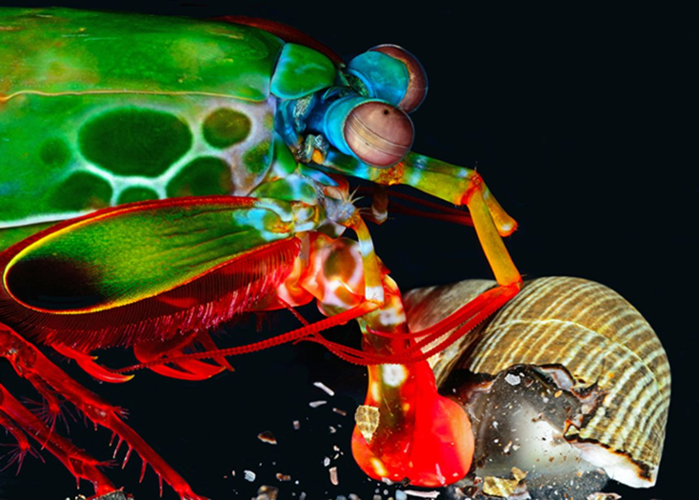
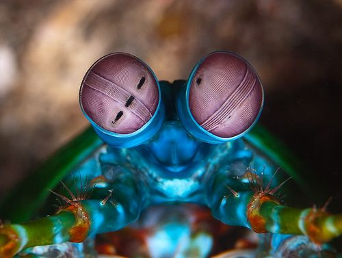

Fatos sobre o Stomatopoda
Informações Gerais

- Nome: Stomatopoda, estomatópodes, tamarutacas, lacraias-do-mar
- Nome científico: Odontodactylus scyllarus
- Reino: Animalia
- Filo: Arthropoda
- Subfilo: Crustacea
- Classe: Malacostraca
- Subclasse: Hoplocarida
- Ordem: Stomatopoda - Latreille, 1817
Mega soco!
Excelente golpeador, o stomatopoda "soca" suas presas com suas patas com uma força de até 2,5 mil vezes seu peso em menos de 800 microsegundos, aproximadamente 80km/h. Este golpe equivale a um tiro de pistola calibre 22.
Hiper visão!
Como se não bastasse, estes crustáceos apresentam a melhor visão em cores do mundo. Possuindo oito fotorreceptores para distinção de cores, humanos possuem apenas três, conseguem detectar ondas ultravioleta, 16 cores primárias e milhares de gradações. Com um mecanismo de polarização visual complexo e visão em 360°, são capazes de determinar profundidade e localização de objetos em três ângulos.